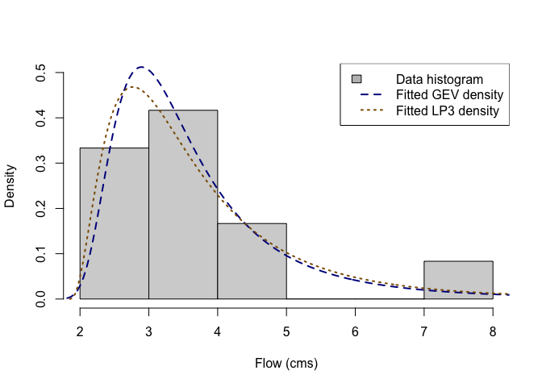
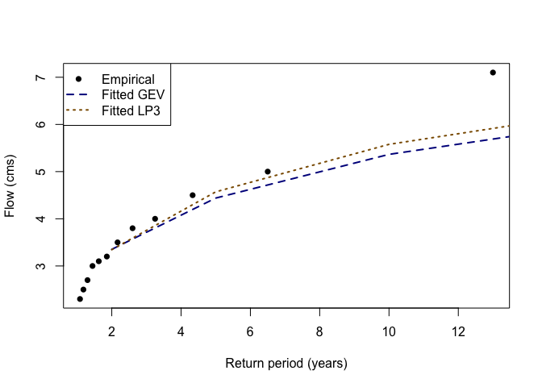

The goal of famish is to refine a family of distributions to match a provided dataset. In most use cases, this means fitting a distribution to data, and this is the current version functionality of famish. Importantly, famish grounds the broader probaverse suite of packages to real data.
This young version of famish currently works mostly by wrapping existing fitting functions from other packages, particularly fitdistrplus, ismev and lmom. The main function is fit_dst(), which fits a specified distribution family to data using a specified fitting method. Thin wrappers for specific distribution families are also provided, such as fit_dst_gev() for the Generalised Extreme Value distribution.
The name “famish” reflects the process of narrowing down a broad family of distributions to those that best fit your needs.
Statement of Need
Many software routines allow for the estimation of probability distributions, but there is a need to connect those estimates to the downstream operations needed for advanced statistical models. The probaverse supplies that higher-level infrastructure, and famish is the bridge that grounds probaverse-built models in real datasets or expert judgment.
Target Audience
famish supports the probaverse user base – anyone who works with probability distributions, including data scientists, analysts, researchers, and students. It serves users who need flexible fitting workflows and clear diagnostics for how well a distribution matches observed data.
It is particularly useful for risk-focused domains – hydrology, economics, actuarial science, credit risk, and similar fields – where tail behaviour and extremes determine decisions and advanced probabilistic models rely on dependable estimation tools.
Installation
You can install the development version of famish from GitHub with:
# install.packages("remotes")
remotes::install_github("probaverse/famish")Future Goals
While the current version of famish is limited in scope, it has big long-term goals, especially as the broader probaverse expands to allow for the easier creation of distribution families. Some bigger goals for famish include:
- Fitting cascades, such as first refining a family to have a specified mean (e.g., as estimated by regression), and then estimating the remaining parameters.
- Fitting a distribution to best match a supplied table of quantiles, or another reference distribution.
- Providing modern estimation methods that are more appropriate for estimation of risk and hazard analysis.
Additional features will be added as development continues. We appreciate your patience and welcome contributions! Please see the contributing guide to get started.
Example: Fitting Distributions to Streamflow Data
In practice, you will most likely just load the whole probaverse with library(probaverse); but in this minimal example, we’ll only load famish, and the core probaverse package, distionary.
To demonstrate, suppose we have 12 years of streamflow data for a small stream, whose annual maxima (in cubic meters per second) are as follows:
x <- c(4.0, 2.7, 3.5, 3.2, 7.1, 3.1, 2.5, 5.0, 2.3, 4.5, 3.0, 3.8)A common practice in hydrology is to fit a distribution to these data, and to calculate upper quantiles.
Using the fit_dst_gev() function, fit a Generalised Extreme Value (GEV) distribution, keeping the default fitting method (maximum likelihood).
# Fit a GEV distribution using the default fitting method.
gev <- fit_dst_gev(x)
#> Loading required namespace: testthat
# Inspect:
gev
#> Generalised Extreme Value distribution (continuous)
#> --Parameters--
#> location scale shape
#> 3.0658476 0.7426435 0.2699160The fitted distribution is from the distionary package, which is the core of the probaverse suite of packages. In fact, almost all distribution families provided by distionary can be fit by famish; to be sure, note that the fit_dst_*() wrappers are the definitive source indicating which families and methods are supported.
Next, try fitting a Log Pearson Type III (LP3) distribution using the method of L-moments, but on the log scale. This time, we’ll demonstrate the use of the main fit_dst() function instead of the fit_dst_lp3() wrapper.
# Fit a Log Pearson Type III distribution using "lmom-log" method.
lp3 <- fit_dst("lp3", x, method = "lmom-log")
# Inspect:
lp3
#> Log Pearson Type III distribution (continuous)
#> --Parameters--
#> meanlog sdlog skew
#> 1.2652738 0.3382651 1.0430967As a first pass at inspecting how well the models fit the data, we can compare density plots to a data histogram.
# Plot a histogram of the data.
hist(x, freq = FALSE, ylim = c(0, 0.5), main = NULL, xlab = "Flow (cms)")
# Overlay the fitted densities.
plot(gev, "density", add = TRUE, n = 400, lty = 2, lwd = 2, col = "blue4")
plot(lp3, "density", add = TRUE, n = 400, lty = 3, lwd = 2, col = "orange4")
# Create a legend.
legend(
"topright",
legend = c("Data histogram", "Fitted GEV density", "Fitted LP3 density"),
fill = c("gray", NA, NA),
lty = c(NA, 2, 3),
lwd = 2,
border = c("black", NA, NA),
col = c(NA, "blue4", "orange4")
)
Upper quantiles are useful for estimating the magnitude of rare events. These can be calculated using the distionary::enframe_return() function. In this case, we’ll calculate the 2-, 5-, 10-, 20-, 50-, 100- and 200-year return levels for each fitted distribution.
# Calculate return levels for each model.
quantiles <- enframe_return(
gev, lp3,
at = c(2, 5, 10, 20, 50, 100, 200),
arg_name = "return_period",
fn_prefix = "flow"
)
# Inspect:
quantiles
#> # A tibble: 7 × 3
#> return_period flow_gev flow_lp3
#> <dbl> <dbl> <dbl>
#> 1 2 3.35 3.35
#> 2 5 4.44 4.57
#> 3 10 5.37 5.58
#> 4 20 6.45 6.70
#> 5 50 8.20 8.43
#> 6 100 9.84 9.95
#> 7 200 11.8 11.7We can also calculate empirical return periods associated with the observed data with the rpscore() function. In this case, use the Weibull plotting position, and compare the empirical return periods to the data.
# Calculate empirical return periods.
x_return_periods <- rpscore(x, pos = "Weibull")
# Inspect in a data frame along with the data.
data.frame(
return_period = sort(x_return_periods),
flow_empirical = sort(x)
)
#> return_period flow_empirical
#> 1 1.083333 2.3
#> 2 1.181818 2.5
#> 3 1.300000 2.7
#> 4 1.444444 3.0
#> 5 1.625000 3.1
#> 6 1.857143 3.2
#> 7 2.166667 3.5
#> 8 2.600000 3.8
#> 9 3.250000 4.0
#> 10 4.333333 4.5
#> 11 6.500000 5.0
#> 12 13.000000 7.1These three sets of return levels can be plotted together to visually assess the fit of the two distributions’ upper tails, as an alternative to the histogram view.
# Plot the empirical frequency-magnitude plot.
plot(
x_return_periods, x,
# log = "x",
xlab = "Return period (years)",
ylab = "Flow (cms)",
pch = 16, col = "black"
)
# Plot the fitted distributions' frequency-magnitude plots.
lines(
quantiles$return_period, quantiles$flow_gev,
col = "blue4",
lty = 2,
lwd = 2
)
lines(
quantiles$return_period, quantiles$flow_lp3,
col = "orange4",
lty = 3,
lwd = 2
)
# Add a legend
legend(
"topleft",
legend = c(
"Empirical",
"Fitted GEV",
"Fitted LP3"
),
col = c("black", "blue4", "orange4"),
pch = c(16, NA, NA),
lty = c(NA, 2, 3),
lwd = 2
)
The ‘famish’ package also provides support for calculating the quantile score. Now calculate the mean quantile score for the 100-year event, recalling that the quantile level (non-exceedance probability of the event) is tau = 1 - 1 / return_period.
## First get the 100-year quantiles for each model.
gev_100y <- quantiles$flow_gev[quantiles$return_period == 100]
lp3_100y <- quantiles$flow_lp3[quantiles$return_period == 100]
## Calculate the mean quantile score for the 100-year event, GEV model.
qs_gev <- quantile_score(x, gev_100y, tau = 1 - 1 / 100)
## Inspect
mean(qs_gev)
#> [1] 0.06112929
## Calculate the mean quantile score for the 100-year event, LP3 model.
qs_lp3 <- quantile_score(x, lp3_100y, tau = 1 - 1 / 100)
## Inspect
mean(qs_lp3)
#> [1] 0.06220155Lower quantile scores suggest a better fit, meaning that the GEV may be better. For a mroe robust decision based on the quantile score, consider using bootstrap to estimate the uncertainty associated with this measurement.
Correctness and Reliability
For those combinations of distribution families and fitting methods indicated by the functions fit_dst_*(), rigorous testing has been conducted to ensure that the estimation methods are consistent – that is, the estimated distribution parameters converge to the true parameter values as more data are drawn from the distribution being estimated.
famish in the Context of Other Packages
famish is unique as it is a bridge from existing fitting routines to the probaverse suite of packages.
- Packages
lmom,ismev, andfitdistrplusare all useful for fitting distribution parameters (and are in fact wrapped byfamish), but remain low-level. - Packages like
distributions3anddistributionalturn distributions in objects, but lack estimation capabilities.
Acknowledgements
The creation of famish would not have been possible without the support of BGC Engineering Inc., the Politecnico di Milano, and the European Space Agency.
Citation
To cite package famish in publications use:
Coia V (2025). famish: Flexibly Tune Probability Distributions. R package version 0.2.0, https://github.com/probaverse/famish, https://famish.probaverse.com/.
Code of Conduct
Please note that the famish project is released with a Code of Conduct. By contributing to this project, you agree to abide by its terms.